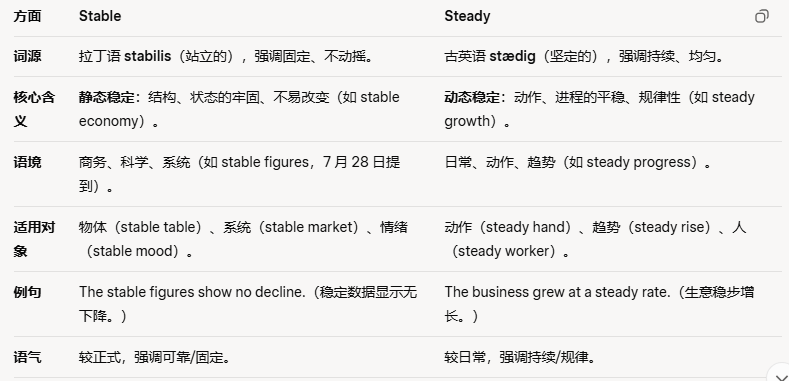
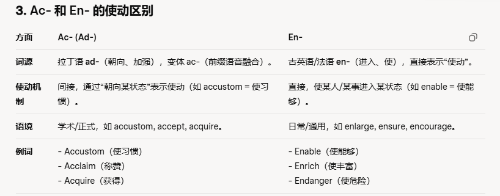

共 50 个词条 · 2 张附图（含音标截图）
interplay n.相互影响，相互作用
Our personalities develop through a complex interplay of genetic and environmental factors.我们的个性是在遗传和环境因素复杂的相互作用下形成的。
the subtle interplay of colours 色彩的相互掩映
the interplay of nature and nurture (/ˈnɜː.tʃər/促进；扶助；培养) in determining our personalities, behavior, and vulnerability to disease先天和后天在决定我们性格、行为和对疾病易感性方面的相互作用
lavatory /ˈlæv.ə.tər.i/ n.盥洗室，厕所
He knows that the nearest public lavatory is at the station.他知道最近的公共厕所在车站。
a bathroom and a lavatory upstairs 楼上的浴室和卫生间
stable adj.稳定的;牢固的;持久的
Some people believe that working in a big, established company is more stable than in a smaller one.有些人认为在规模大的知名公司工作比在小公司工作稳定。
stable prices 稳定的价格
steady adj.稳定的 还有一个constant，持续的，一直这样的，也有稳定的含义
stability n.稳定;稳定性

breed v. 繁殖；养育，培养 n. 品种；类型
They decided to adopt a rescue dog rather than buy a specific breed from a breeder.他们决定收养一只救援犬，而不是从饲养员那里购买特定的品种。
a new breed of entrepreneurs新型的企业家
drift n.漂流;流动;趋势v漂流;漂泊
The boat raised its anchor and started to drift with the tide. 船起了锚，开始随着潮汐漂流。
a population drift away from rural areas农村地区的人口外流，rural的反义词是urban
acrobat n.杂技演员
The skilled acrobat amazed the audience with breathtaking stunts.熟练的杂技演员以令人惊叹的特技使观众兴奋不已
an acrobat in a circus马戏团的一名杂技演员
lens n.镜头;透镜，镜片
The photographer adjusted the camera lens to capture the perfect shot.摄影师调整了镜头以捕捉完美的画面。
camera with an adjustable lens带有可调节镜头的照相机
parcel n.包裹;一批v.打包
Her admirer delivered the small parcel and quietly left it in the reception room.她的仰慕者送来了小包裹，悄悄地把它放在会客厅里。
a parcel and some letters for you 你的一个包裹和几封信
sensor n.传感器，这个词来自于sense，表示感觉
Cars almost all have sensors today so that the vehicle can warn you if you are too close to another car or an obstacle while parking.如今，几乎所有的汽车都装有传感器，停车时，如果你离另一辆汽车或障碍物太近，汽车就会发出警告。
light sensor 光传感器
temperature sensor 温度传感器
susceptible /səˈsep.tə.bəl/ adj.易受影响的;易感动的
Older people are more susceptible to infections than younger people.老年人比年轻人更容易被感染。
the most susceptible to advertisements /ədˈvɜː.tɪs.mənt/最容易受广告影响
sanction v./n.制裁，处罚; 许可，批准
The government imposed （施加）economic sanctions to pressure the neighbouring country.政府实施经济制裁以向邻国施压。
trade sanctions 贸易制裁
praise v./n.赞扬，称赞
It is important to give children praise for good work, so they remain motivated对孩子好的表现给予表扬是很重要的，这样他们可以保持积极性。
full of praise for his progress对他的进步进行夸赞
dissertation /ˌdɪs.əˈteɪ.ʃən/ n.专题论文，学位论文
She dedicated(奉献，献出（全部精力、时间等），（把书籍、戏剧、演出等）献给为（尤指宗教建筑）举行奉献典礼;为…举行落成仪式，他的名词形式是dedication) months to research and writing to complete her doctoral (al是形容词后缀) dissertation
为了完成博士论文，她花了几个月的时间进行研究和写作。
write a dissertation 写一篇论文
If I choose that option, I don't have to do a dissertation module.（本意是模块，经常指选的一门课） 如果我选择了那个选项，我就不必做论文模块了。
plank n.木板;政策准则 体育锻炼中那个平板支撑也叫plank
The circus performer balanced skillfully on the wooden plank showcasing his agility （agile是形容词）.马戏演员熟练地在木板上保持平衡，展示了他的敏捷。
a wooden plank 一条木板
More recent archaeological (/ˌɑː.ki.əˈlɒdʒ.ɪ.kəl/ )hypotheses have them transporting the bluestones with supersized wicker baskets on a combination of ball bearings and long grooved planks, hauled by oxen
更近期的考古学假设是：他们用超大号的藤条篮子盛放这些蓝灰砂岩，放在由球型轴承和有凹槽的长木板组合成的运输工具用牛群拖拽
equivalent adj.相等的；等价的n. 等价物 这个词就是个等于号=
She was a fantastic cook, and her dishes 这个不是碗，是菜were equivalent in quality to those in some of the best restaurants（注意拼写）她是一位出色的厨师，她做的菜的质量与一些最好餐馆里菜的质量相当。
be equivalent to 相当于，等同于
equivalence n.均等;相等
According to its proponents（反义词是opponent）, geo-engineering is the equivalent of a backup generator.对于其支持者而言，地质工程就相当于一个备用的发电机。
particle n.微粒;粒子
There was not a particle of evidence to support his viewpoint没有一点证据支持他的观点。
a particle of hot metal 热金属微粒
The reader must remain a tantalized (心动不已的)spectator rather than an involved （融入其中的）participant, since the appropriate language for describing the details in much of science is mathematics, whether the subject is expanding universe, subatomic particles, or chromosomes.
读者只好全程做一个跃跃欲试而不得的旁观者，而不是加入其中的参与者，因为描述大部分科学领域中细节内容的恰当语言是数学语言，无论话题是膨胀宇宙、亚原子粒，还是染色体。
statistics n.统计;统计学;统计数字，在统计数字的时候等于data
The statistics come from a recent study by Oxford University research team.这些数据来自牛津大学研究团队最近的一项研究。
official statistics官方统计数字
interpersonal adj.人际的;人际关系的
Interpersonal relationships across cultures are key to developing sound global skills in today's world.在当今世界，跨文化的人际交往能力是培养全球化技能的关键。
interpersonal skills 人际交往技巧
valid adj.有效的;有根据的;合法的
Your passport must be valid for at least six months to apply fora visa.你的护照必须有至少六个月的有效期才能申请签证。
valid passport 有效的护照invalid adj.无效的
validity n.有效性，效度
hull /hʌl/ n.船体;外壳
The hull of the ship had been severely /sɪˈvɪə.li/ damaged by the accident.
这艘船的船体在这次事故中被严重损坏。
wooden hull 木质船体steel hull 钢质船体
chaos n.混沌;混乱
Without strict regulations and rules schools would fall into total chaos.没有严格的规章制度，学校就会陷入一片混乱。
economic chaos经济混乱
embody v.体现;收录，包含
The actor's performance perfectly embodied 这里相当于show/present the character's emotions.演员的表演完美地体现了角色的情感。
embody the proposal in a draft resolution将提议包含在一份决议草案中
incentive n.激励，刺激
The company offered him an extra bonus as an incentive公司给他一笔额外奖金作为激励。
tax incentives税收激励
motif /məʊˈtiːf/ 注意重音位置 n.主题，主旨;装饰图案，装饰图形
The ancient（/ˈeɪn.ʃənt/古代的；古老的；年代久远的） rug was decorated with a beautiful flower motif.这块古老的地毯上装饰着美丽的花朵图案。
wallpaper with a flower motif 有鲜花图案的墙纸
pharmacy /ˈfɑː.mə.si/ n.药店，药房；药剂学
The pharmacy near his home was open 24 hours, which was convenient when he needed to buy medicine at night.他家附近的药店24小时营业，这在晚上需要买药时很方便
modern pharmacy 现代制药学
pharmaceutical /ˌfɑː.məˈsuː.tɪ.kəl/ adj.制药的 这个词很重要比如：pharmaceutical research
grateful adj. 感谢的，感激的
She was incredibly grateful for all the wonderful gifts they had given her for her anniversary.她非常感激他们送给自己的结婚纪念日礼物。
grateful for a chance to relax 庆幸有机会放松一下
adequate adj.充足的;适当的 相当于sufficient /enough /ample（注意，单独的ample是充足，丰满，充分的意思，如果要表明放大是amplify）
Adequate water intake is necessary for the body to function 这里是动词，起功能，起作用的意思properly.充足的水分摄入是身体正常运转所必需的。
an adequate supply of hot water 充足的热水供应
inadequate adj.不足的;不充分的
adequately adv.足够地
have adequate sanitation services 有充足的卫生服务
calcium /ˈkæl.si.əm/ n.钙 钙经常和骨头一起出现
Consuming foods rich in calcium is essential for maintaining strong and healthy bones.食用富含钙的食物对于保持强壮健康的骨骼是必不可少的。
aid the absorption of calcium from food帮助从食物中吸收钙
priority n.优先事项;优先级
His top priority for the new company was to improve staff motivation by organising team-building activities.他在新公司的首要任务是通过组织团队建设活动来提高员工积极性。
top priority 最重要的事项
our first priority 我们最优先的事项
Fragile mountain forests should be given priority in research programs研究项目应当首先考虑脆弱的山地森林。
envisage /ɪnˈvɪz.ɪdʒ/ v.设想，想象，展望
They could not envisage the challenges that lay ahead他们无法想象到出现在面前的挑战。
envisage working with him again想象再与他一起工作
envision v.想象;预想.vision=视野，en=使动，使你获得视野，就是想象
efficiency n.效率，效能;功率
efficient/efficiency 这是一组形容词/名词， effective/ effect这也是一组，表示高效（的），有效（的）
The new manufacturing process improved efficiency, reducing production time and costs. 新的制造工艺提高了效率，减少了生产时间和成本。
improvements in efficiency at the factory 工厂效率的提高
efficient adj.高效的
proficient adj.熟练的 这个也必须会啊
Engineers are tasked with changing how we travel round cities through urban design, but the engineering industry still works on the assumptions that led to the creation of the energy-consuming transport systems we have now; the emphasis placed solely（唯一地，单独地，仅有地这个词跟solo有关系） on efficiency, speed, and quantitative（定量的，量化的） data.
工程师们的任务是通过都市设计来改变我们在城市中的流动方式，然而工程建筑业仍然在这样的一些理念下运转，最终形成了我们日前所拥有的这些消耗能量的交通系统；重点全盘放在了效率、速度和量化数据上。
stitch n.针脚，一针；缝线v缝；缝合
The surgeon would pick up his instruments （这里指医生的器械，不是乐器哈，他还能指飞机上的仪器，仪表）, probe, repair, and stitch up again.外科医生会拿起器械进行探查、修复，然后再缝合
keep the stitches small and straight 针脚尽量缝得小而直
appraisal n.评价;估计 这个相当于evaluation
The end of year performance appraisals should be out sometime in the middle of this month.年终绩效评估应该会在本月中旬公布。
detailed critical appraisals of her work 对她作品的详细评论
appraise v.评价;估价;估计
neural /ˈnjʊə.rəl/ adj.神经的;神经系统的
They say that if you take vitamin B regularly, this improves the performance of the neural networks in your brain.他们说，如果定期服用维生素B，这将改善你大脑中神经网络的状态。
neural pathways in the brain大脑的神经通路
神经外科 Neurosurgery uk /ˌnjʊə.rəʊˈsɜː.dʒər.i/ us /ˌnʊr.oʊˈsɝː.dʒər.i/
神经内科 Neurology uk /njʊəˈrɒl.ə.dʒi/ us /nʊˈrɑː.lə.dʒi/
crown /kraʊn/ n.王冠；王位，王权
The king placed the jeweled /ˈdʒuː.əld crown on his head, symbolizing his authority.国王把镶有宝石的王冠戴在头上，象征着他的权威。
a crown of flowers 一个花冠
He argues that tooth crowns and roots have a high genetic component 组成部件，因素, minimally affected by environmental and other factors.他认为齿冠和齿根包含极高的遗传因素，受环境和其他因素影响最小。
pretend v.假装，伪装
She was incredibly sad but she pretended to be happy so not to worry her family.她非常伤心，但还是假装高兴，为了不让家人担心。
have to pretend all the time 总是需要假装
intend v.想要，有意 =want
attend v.参加，出席
tend to 倾向于，往往会***
compulsory adj.强制的;义务的;必修的
Studying science and math at middle school level is compulsory in most countries.在大多数国家，中学阶段的科学和数学都是必修课。
compulsory education 义务教育，这是最常见的搭配
compulsory redundancy 强制裁员
voluntary adj.自愿的;志愿的
category n.种类，分类;范畴
There is a special category in the tax form for people who have part-time employment.在税务清单上有一个特殊类别，是为那些有兼职工作的人准备的。
three main categories 三大类
class n.类别;阶层
prototype n.原型;雏形
The final product was not yet complete, but the prototype had successfully performed during the trials.最终产品尚未完成，但原型产品在试验期间成功运行。
the prototype of the bicycle 自行车的雏形
Prototypes of medical-diagnosis programs and speech recognition software appeared to be making progress.医学诊断程序和语音识别软件的原型似乎正在取得进展。
milestone n.里程碑;划时代事件
Finally getting his master's degree was an important milestone in his academic life.最终取得硕士学位是他学术生涯中一个重要的里程碑。
a milestone in the history of cinema电影史上的一个里程碑
eventually adv.最后，终于= finally
After a lot of effort and trial and error he eventually managed to solve the problem.
经过大量努力和反复尝试，他最终成功解决了问题。
arrive at the hotel eventually 最终到达了旅馆
initially adv. 最初地，这是反义词
eventual adj.最终的，最后的
Eventually, Rome's navy became the largest and most powerful in the Mediterranean, and the Romans had control over what they therefore called Mare Nostrum meaning “our sea”最终，罗马海军成为地中海区域最大、最强的军队，罗马人征服了这片他们称为Mare Nostrum的海域，意为“我们的海”
chamber /ˈtʃeɪm.bər/ 注意发音，不是“æ” n.一个小的空间，室，腔;房间;会议厅
The courtroom was a large, dark chamber at the end of the hall.法庭在大厅尽头，是一个很大的、光线暗的房间。
leave the council chamber （讨论事务的空间）离开会议厅
the burial (/ˈber.i.əl/ )chamber of the tomb 陵墓的墓室
virtue n.美德；优点
It was a surprise to many that the Olympic athletes displayed such virtue in praising and encouraging their opponents（对手）.令许多人吃惊的是，奥运会运动员在赞扬和鼓励他们的对手方面表现出了如此的善意。
the virtues of the Internet 互联网的好处
advantage n.优点
inhale v.吸入;吸气
When doing yoga exercises it is important to control how you inhale and exhale.做瑜伽练习时，控制你的吸气和呼气是很重要的。
inhale fresh air 呼吸新鲜空气
breathe in 吸气;吸入
exhale v.呼气;发出
terrestrial /təˈres.tri.əl/ adj.地球的;陆地的，陆生的 ter表土地的 territory，领地领土
It is said that these terrestrial plants do not grow at all in water.据说这些陆生植物完全无法在水中生长。terrestrial life forms 地球上的生命形态
other large terrestrial mammals 其他大型陆生哺乳动物
accustom v.使习惯，使适应
When one moves away from home, it takes time to accustom oneself to a new environment.当一个人离开家后，使自己适应新环境是需要时间的。
accustom herself to the tight bandages使她自己习惯那些紧绷的绷带

关键区别：
Ac-：使动通过“朝向”某状态，偏拉丁语系，语感正式（如 accustom 使熟悉某习惯）。
En-：直接“使成为”某状态，语感更直接、通用（如 enlarge 使变大）。
disguise /dɪsˈɡaɪz/ 注意发音v.伪装;掩饰n.伪装物;伪装
I love old detective stories where the secret agents wear all sorts of different disguises我喜欢早期的侦探小说，里面的秘密特工会使用各种各样的伪装。
disguise her surprise 掩饰她的惊奇
conceal v.隐藏，隐瞒
define v.下定义;使明确;规定
It is difficult for people to really define what they mean by happiness.人们很难真正定义他们所谓的幸福是什么。
be difficult to define 很难界定
Here is how some of today's “explorers" define the word以下是如今一些“探索者”对这个词的定义。
definition ˌ/def.ɪˈnɪʃ.ən/ n.定义
definitive /dɪˈfɪn.ɪ.tɪv/ adj.确定的，明确的，最终的，决定性的;不可更改的
collision /kəˈlɪʒ.ən/ n.碰撞，相撞；冲突
There was a slight collision but my car was undamaged虽有轻微碰撞，但我的汽车没有损坏。
a collision between two trains 两列火车相撞事故
That would alleviate （/əˈliː.vi.eɪt，减轻；缓和，缓解） the need for many of the unnecessary manoeuvres （/məˈnuː.vər/，行为动作，做法等，精巧动作，军事演习，策略，花招） that are carried out to avoid potential collisions那样就能减少许多不必要的为了避免碰撞而做出的躲避动作。
syndrome /ˈsɪn.drəʊm/ n.症状;综合征
His anxiety syndrome was always something he struggled with after the conflict.他总是在发生矛盾后受到焦虑症状的困扰。
Middle East Respiratory Syndrome中东呼吸综合征